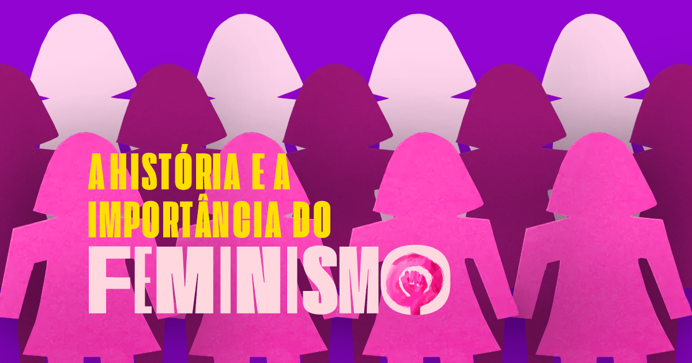

O feminismo é um movimento que começou a partir do século XIX e atualmente virou um movimento social, político e filosófico, que tem como finalidade propor direitos iguais entre as mulheres através do empoderamento feminino, sem a existência de padrões patriarcais ou impostos pela sociedade.
Estudiosos do tema explicam que o surgimento do feminismo pode estar associado ao adventos da Revolução Francesa (1789), pois nessa época foi escrita a “Declaração dos Direitos do Homem e do Cidadão”.
Sendo assim, dois anos depois (1791), a revolucionária e feminista francesa Olímpia de Gouges compôs a “Declaração dos Direitos da Mulher e da Cidadã”, proclamando que a mulher possuía os mesmo direitos que os homens e que, por isso, tinha o direito de participar, direta ou indiretamente, da formulação das leis e da política em geral.Ainda nos anos 60, muitos homens apoiaram a luta das feministas em busca de igualdade de gênero, e em outras áreas. Mas para muitas integrantes do movimento, e até mesmo alguns homens, o termo "feminista" deve ser usado apenas por mulheres.
Seu primeiro livro, Direitos das mulheres e injustiças dos homens, foi publicado quando tinha 22 anos. Inspirada no livro Vindications of the Rights of Woman, da feminista inglesa Mary Wollstonecraft, a obra foi a primeira no país a tratar dos direitos das mulheres à instrução e ao trabalho.
Ela participou do comitê elaborador da Constituição, em 1934, que garantiu às mulheres a igualdade de direitos políticos e foi eleita primeira suplente de deputado federal, tendo assumido a cadeira na Câmara durante pouco mais de um ano, em 1936, após a morte do deputado Cândido Pereira.
Ela estudou advocacia na Europa, onde teve contato com as ideias do movimento sufragista. Quando voltou ao Brasil percebeu que a Constituição Brasileira de 1928 não vetava o voto feminino. O Artigo 70 da Constituição então vigente dizia, sem discriminação de gênero: "São eleitores os cidadãos maiores de 21 anos que se alistarem na forma da lei".
Fundadora do primeiro sindicato de trabalhadoras domésticas do Brasil, é fundamental para o reconhecimento dos direitos da categoria. Em 1961, no interior paulista, funda a Associação Profissional Beneficente das Empregadas Domésticas. A iniciativa influencia a criação de outras entidades nos estados e culmina, em 1988, com a criação do Sindicato dos Trabalhadores Domésticos.
Apesar de todas as conquistas das mulheres nas últimas décadas, ainda vivemos em uma sociedade patriarcal e machista, em que ainda se tolera a violência contra a mulher e a ideia de que esta é inferior ao homem.
Não é raro ouvirmos comentários de que mulher não pode fazer determinada coisa por ser “coisa de menino e não de menina”. Somos, até mesmo, questionadas se nossos namorados deixam que saiamos sozinhas com as amigas ou usando roupas curtas, como se, de alguma forma, fossemos propriedades dos homens e precisássemos de autorização para fazer alguma coisa.
Não raro também ouvimos comentários que justificam a violência contra a mulher, dizendo que “se apanhou é porque fez alguma coisa”, ou que a vítima de estupro é responsável pela violência sofrida. A vítima é julgada pelo tamanho de suas roupas, pela hora que ela estava andando sozinha na rua, enquanto o seu agressor é esquecido – e, apesar de ter cometido um crime, muitas vezes não é punido.
Ainda, pode-se citar a objetificação do corpo feminino em inúmeras propagandas, onde a mulher está ali como um objeto para agradar e satisfazer o homem. Não só isso: desde meninas, somos levadas a acreditar pelos filmes e contos de fadas que uma mulher só estará verdadeiramente realizada se ela se casar e tiver filhos.
Com tudo isso, não podemos ignorar a importância do feminismo na atualidade. Ao contrário do que muitos pensam, o feminismo não é o oposto do machismo. O feminismo prega a igualdade de gênero, prega uma sociedade onde mulheres e homens tenham, de fato, os mesmos direitos. Defende o direito das mulheres de poderem andar nas ruas sem ter que ouvir cantadas desagradáveis – afinal, o corpo delas pertence somente a elas, sendo a rua pública -, defende que as mulheres possam ganhar o mesmo salário que os homens ao desempenhar a mesma função, entre outras reivindicações. O feminismo desfaz a ideia incutida pela sociedade patriarcal que mulheres devem ser rivais entre si.
